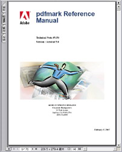
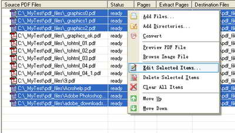
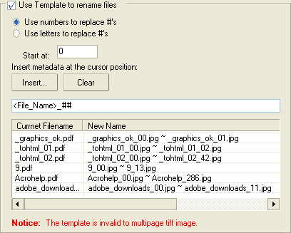

| PDF to IMAGE Converter |
| 1. Overview | ||
| 2. Functions | ||
| 3. Installation&Uninstallation | ||
| 4. System requestment | ||
| 5. Getting started | ||
| 6. General Options | ||
| 7. Page Options | ||
| 8. Rename Options | ||
| 9. Image Options | ||
| 10. Pages Range Setting | ||
| 11. Registration | ||
| 12. Copyright&License |
| 1. Overview |
| AP PDF to IMAGE Batch Converter is a useful pdf tool, the converter produces fully functional IMAGE documents with text, pictures, graphics etc, using the original PDF document formatting.It does not need any software support, such as Adobe Acrobat, Acrobat Reader, etc. |
| AP PDF to IMAGE Batch Converter supports outputting result pages to be customized.You can select sevral pages document to convert,and even at the discretion of you to convert pages document. Such as "1,2,3","2-100" etc,more information,please reference to page range setting. It process the documents one after another, to ensure a output directory for each of them and placing all the finished files of the document into its corresponding directory. |
| 2. Functions |
| (01) | It quickly convert pdf document to image format. |
| (02) | It supports batch pdf to tiff conversion. |
| (03) | It supports encrypted pdf file. |
| (04) | It supports outputting result pages to be customized. |
| (05) | It supports conversion of vector graphics into image files. |
| (06) | It supports multifarious image format,such as 'bmp','tiff','jpg','gif','png','pcx' etc. |
| (07) | It supports generate multipage tiff files. |
| (08) | It supports any resolution in the generated Image files. |
| (09) | It supports conversion into 1bit, 4bits, 8bits,4bits grayscale ,8tits grayscale and 24bits format image. |
| (10) | It supports multifarious compression of tiff image,such as LZW, JPEG,PACKBITS, CCITT Group3,CCITT Group4,RLE etc. |
| (11) | It supports rename a group of image files using the Batch Rename Tool. |
| (12) | It supports custom size of images in pixel. |
| (13) | It supports rotate/flip result images, such as 90,180,270 degree. |
| (14) | It converts drag and drop of files. |
| (15) | It supports Win98/ME/NT/2000/XP/Vista platform. |
| (15) | It can automatic view the image files after converted. |
| (17) | It allows you to preserve original document layout. |
| (18) | It is easy to use stand-alone application. |
| (19) | It does not require Adobe Acrobat or Reader support. |
| (20) | Automatic installation and configuration. |
| (21) | Adobe Acrobat 3.0, 4.0, 5.0, 6.0 compatibility. |
| PDF to IMAGE effect pictures |
|  | |
| (1) Source PDF file | (2) Destination image file |
| 3. Installation&Uninstallation |
| Installation: You can download the programe setup file from our site at first,then double click the setup file,it will automaticlly be installed at you computer by default settings.Just press "OK" or "Cancle" etc. The steps reference to following. |
| step 1. Double click the install file and then the setup 'welcome' window appears. | ||
| step 2. Click "Next" appears the 'Select Destination Location' window,now you can select the programe installation directory or use default settings. | ||
| step 3. Click "Next" appears the 'Select Start Memu Folder' window to let you select start menu folder,default folder is "Ap PDF to IMAGE ".Of course you can input any name of the folder which you like. | ||
| step 4. Click "Next" appears the 'Select Additional Tasks'' window,it allows you to create a desktop icon and a quick launch icon after you check the settings. | ||
| step 5. Click "Next" appears the 'Ready to Install' window,it allows you to start installation program. | ||
| step 6. Click "install" to install the program to you computer,after the programe has been installed,it appears the 'completing' window.Then you click "finish",the installation is over. |
| Uninstallation: |
| (1) Open windows system start menu,click "Ap PDF to IMAGE "->"Uninstall Ap PDF to IMAGE " to remove the program. | ||
| (2) Open the Control Panel, double click Add/Remove Programs,and delete "Ap PDF to IMAGE " to remove the program. |
| 4. System requestment |
| Supported Operation Systems |
| The following operation systems listed have been tested with AP PDF to IMAGE Batch Converter and are officially supported. |
| (1) Microsoft Windows 2003 Server 32-bit Web Edition, Standard Edition and Enterprise Edition; |
| (2) Microsoft Windows 2003 Server x64 Web Edition, Standard Edition and Enterprise Edition; |
| (3) Microsoft Windows XP Professional and Home Edition; |
| (4) Microsoft Windows XP x64 Professional; |
| (5) Microsoft Windows 2000 Server and Advanced Server; |
| (6) Microsoft Windows 2000 Professional; |
| (7) Microsoft Windows Vista Ultimage and Home Edition; |
| Recommended hardware |
| (1) CPU: Intel(or Standard PC) 800MHz or faster compatible x86 processor; |
| (2) RAM: 256MB or more RAM recommended, 128MB minimum; |
| (3) Hard-disk: 100MB free space recommended, 50MB free space required; |
| 5. Getting Started |
|
| 6. General Options |
| Click the "Settings" button, then select the "General Options " page. |
| (1) Save Mode |
| The system supports two kinds of save mode. You can save the result of image documents to the input directory,also save to the custom directory.If the custom directory is not exist,it will be created. By default, the system places the image documents in the same directory with the PDF document. If you need to save image files to other directories, check the "Save to following directory " and click the "Browse" button. You may also manually type in the directory name or just copy/paste it. |
| (2) PDF Security |
| Usually,There are some PDF documents which encrypted, they cannot be edited or their contents cannot be copied,you will need a password to see the contents of the documents. Thus, in order to convert the documents, you will need to provide a password. |
| (3) Record Log |
| You can sure to record log after you check the "Record Log ",and you can place log file at any directory which you like,the log file is default placed at the program directory. The information that program recorded looks like the following. SOURCE_PDF_FILE: [C:\_mypdftest\test_txt_a1.pdf] DESTINATION_DIR: [C:\_mypdftest] STATUS: [success] Message: [Conversion success.] DATE_TIME: [2007-03-16 09:57:04] SOURCE_PDF_FILE: [C:\_mypdftest\test_txt_a2.pdf] SOURCE_PDF_FILE: [C:\_mypdftest\test_txt_a3.pdf] |
| 7. Page Options |
| Click the "Settings" button, then select the "Page Options" page. |
| (1) Page Range |
| The system supports to customize pages. You can select several pages document to convert, and even at the discretion of you to convert pages document. Such as "1,2,3","2-100" etc, more information, please reference to pages range setting. |
| (2) Page Zoom |
| You can zoom the fonts, images, graphics and the pages to be suitable for reading. The programe supports 50 percent to 200 percent of page size. |
| (3) Custom Image Size |
| By setting the options "width" and "height", you can customize the width or height of the final result image in pixel. |
| (4) Custom Image Rotated Angle |
| You can rotate an image in 90-degree increments, or you can select the amount of rotation in degrees. You can save your options as a preset for future use. The following is a picture example. |
| 7.1 Source PDF File. | 7.2 After rotated in 90-degree. |
| 8. Rename Options |
| Click the " Edit Selected Items... " button, then select the "Rename Options " page. |
| You can use the batch rename tool to rename a group of files. You can specify a template with a numerical or alphabetical sequence, save your template for future use, replace specific characters or phrases, and insert file-specific information into each new file name. |
| (1) To rename a group of files: |
 |
|
 |
|
| (2) Batch Rename options |
| Use numbers to replace #'s | Replaces any number signs (#) in the template with sequential numeric characters. |
| Use letters to replace #'s | Replaces any number signs (#) in the template name with sequential alphabetic characters. |
| Start at | Specifies the first letter or number of the sequence. |
| Insert Metadata | Inserts file-specific information into the file name template. Position the cursor in the Template field, and then click "Insert..." button to open the "Metadata" dialog. Select the metadata you want to insert and click "OK" button. |
| 9. Image Options |
| Click the "Settings" button, then select the "Image Options " page. |
| Through the tiff option you can set outputting result tiff dpi, 1 or 4 or 8 or 24 color bits of the tiff, colorized or grayscale palette,jpg compression quality, the compression of the tiff and mutiple pages tiff file etc. |
| 10. Pages Range Setting |
| The system supports to customize pages.You can select sevral pages document to convert,and even at the discretion of you to convert pages document. Such as "1,2,3","2-100" etc,more information reference to the following. |
|
| 11. Registration |
| (1) Demo version |
| You can free download a demo version at http://www.adultpdf.com/products/pdftoimage/index.html |
Limitations of the demo version: You are allowed to process only up to 10 pages of each pdf files simultaneously. |
| (2) Buy now |
| You can
order AP Pdf to Tiff Batch Converter online.
Click here to buy right now. Single License - only $39.9,thanks for you support. |
| (3) Technology support |
Guarantee: We are committed to providing excellent products and support to our customers. If you are dissatisfied with a adultpdf product after your purchase, we will refund your money. Privacy Policy: We will not give, sell or otherwise transfer your personal information to third parties. Unless you ask us not to, we will send occasional email about new products and releases. Ongoing Open Dialog: Our customers are our most valuable resource. Please let us know how we can improve our products and we will try our best to implement your suggestions. |
| If you have some questions about
registering our product(s),or programe bugs,or suggestions of our product(s),or suggestions of our site,we will welcome you to contact us. Our sales email: sales@adultpdf.com Our support email: support@adultpdf.com |
| 12. Copyright&License |
|
| http://www.adultpdf.com |
| Copyright 2000-2008 by AdultPDF Technology, Inc. All rights reserved. |